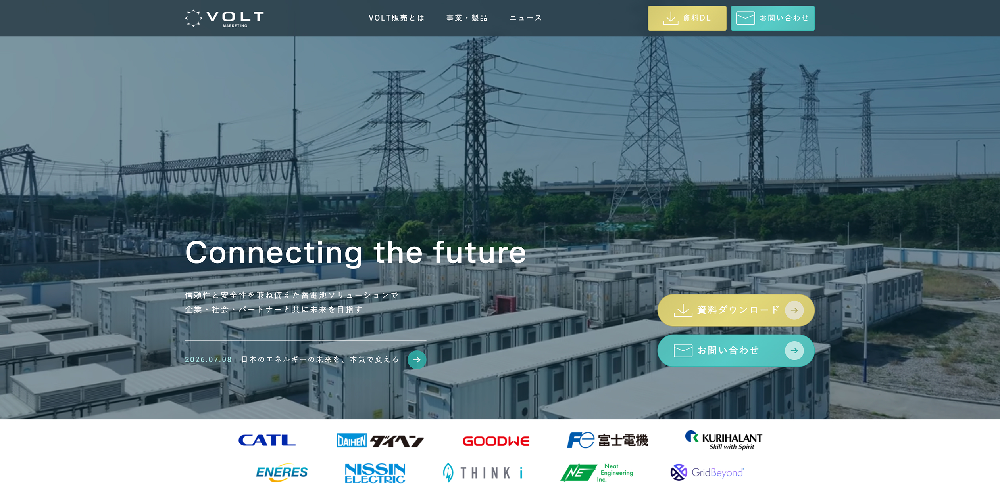
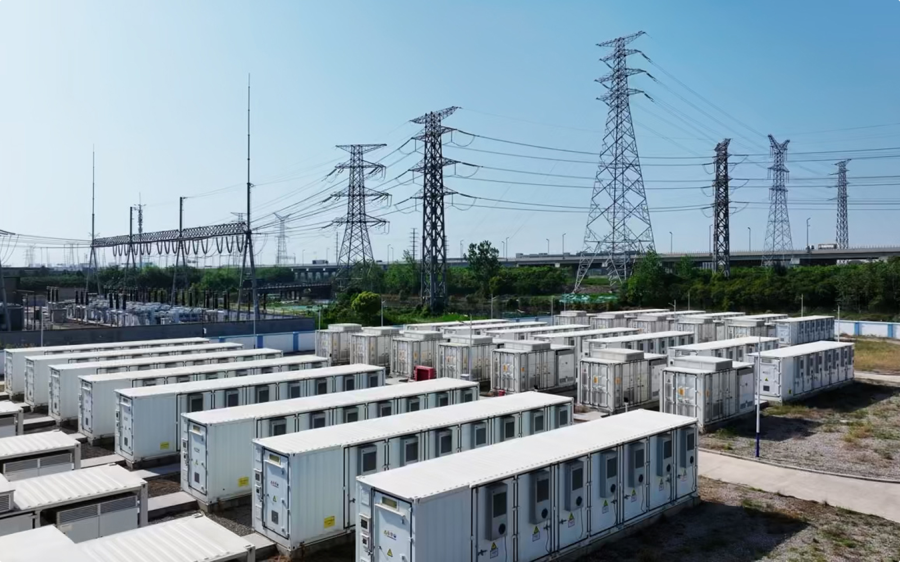
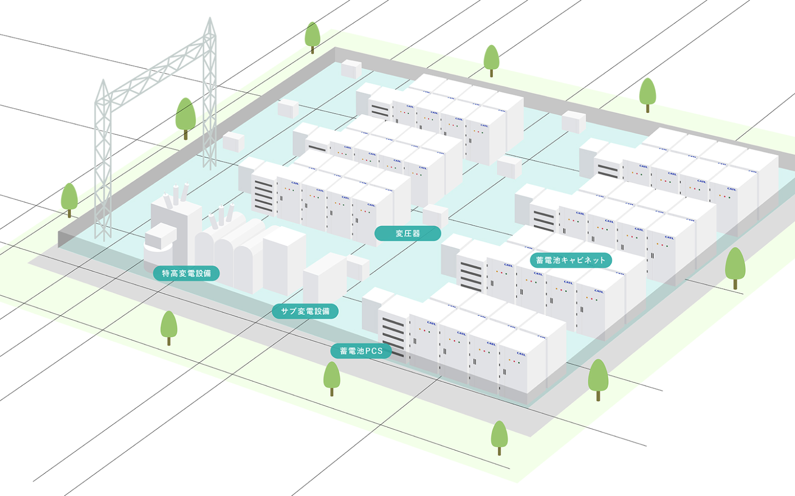
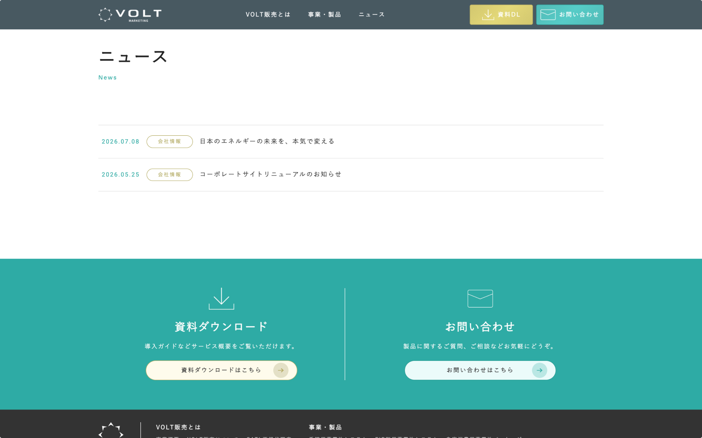

WEB
VOLT販売株式会社公式サイト

蓄電池の販売会社の公式サイトを作成
制作背景
既存のWebサイトはWixを使用して社内で制作されていたが、掲載情報が少なく、事業内容や製品の魅力を十分に伝えきれていないことが課題だった。
また、営業活動で使用するパンフレットにWebサイトへのQRコードを掲載するため、営業後にサイトを訪れた方へ、より詳しい情報を届けられるWebサイトを目指してリニューアル。
制作について
蓄電池という専門性の高い分野のため、クライアント先を直接訪問し、事業内容や製品についてヒアリングを実施。ヒアリング内容をもとにサイト構成を作成し、クライアントと内容をすり合わせながらデザインへと落とし込んだ。
制作のポイント

POINT1
TOPの動画
既存素材の福岡県の蓄電池施設で撮影された動画素材を使用。TOPのメインビジュアルとしては印象が単調になりやすかったため、PIXTA・iStockから事業内容に合う動画素材を選定し、追加した。
太陽光発電や電気自動車など、実際には取り扱っていない事業の映像は使用せず、クライアントへの確認を行いながら素材を選定。動画編集は撮影を担当したカメラマンが行った。

POINT2
蓄電池のイラスト
蓄電池施設の写真素材をもとに、サイトで使用する俯瞰イラストを1から制作。設備の形状や配置を整理しながら、全体像が伝わりやすいようイラスト化した。
蓄電池の色はやや青みを加えたグレーを使用し、無機質になりすぎず、サイト全体になじむ洗練された印象を目指した。

POINT3
WordPressで更新機能を実装
WordPressでニュース投稿機能を実装し、クライアント自身で記事の追加・更新ができるようにした。
公開後は操作方法を案内し、社内で継続的に情報を発信できる運用環境を整えた。